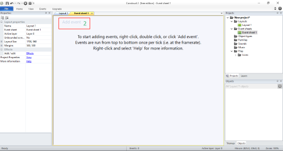
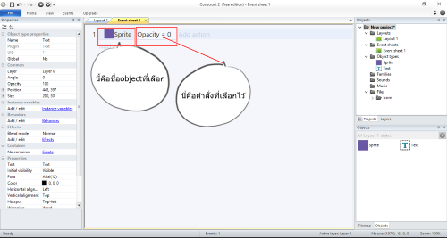
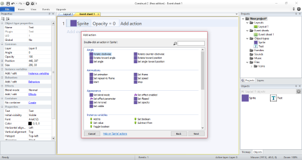

#การใส่Event sheet Construct 2
1.ดับเบิลคลิกไปที่Event sheet

2.เมื่อดับเบิลคลิกแล้วจะได้หน้าต่างแบบนี้แล้วคลิกที่หมายเลข2

3.เมื่อคลิกที่หมายเลข2แล้วจะได้หน้าต่างแบบนี้ซึ่งหน้าต่างนี้จะแตกต่างกันไปตาม
ภาพและobjectที่นําเข้ามาแต่ที่จะมีเหมือนกันทุกเครื่องคือSystemเมื่อได้หน้าต่างนี้
แล้วให้คลิกเลือกobjectใดobjectหนึ่ง(ในกรอบสีแดงคือobject)

4.เมื่อคลิกแล้วจะได้หน้าต่างนี้แล้วซึ่งจะแตกต่างกันตามobjectที่เลือกไว้ก่อนหน้า
นี้แล้วคลิกเลือกคําสั่ง

5.ผลที่่ได้จะเป็นดังนี้ แล้วกดที่Add action

6.เมื่อกดที่Add actioจะขึ้นหน้าต่างแบบนี้ซึ่งจะแตกต่างกันตามobjectและ
คําสั่งด้านซ้ายมือแล้วคลิกเลือกobjectใดobjectหนึ่ง(ในกรอบสีแดงคือobject)
7.เมื่อกดแล้วจะขึ้นหน้าต่างนี้ให้กดเลือกคําสั่ง

8.เมื่อกดเลือกคําสั่งแล้วจะได้แบบนี้

8.เป็นอันเสร็จเรียบร้อย1คําสั่ง
*ถ้าไม่เข้าใจดูวีดโอข้างลางต่อได้*

*ช่วงแรกจะเป็นโฆษณา วีดีโอนี้จะอยู่ช่วงหลัง*

วัดวีรโชติธรรมมาราม


ติดต่อโฆณาติดต่อ